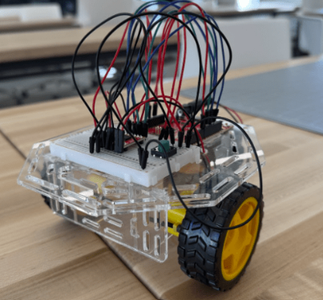
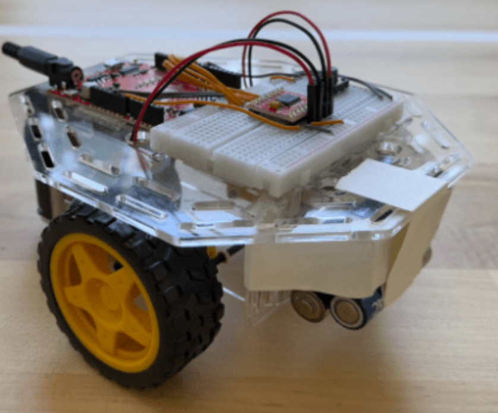
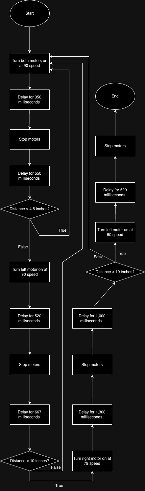
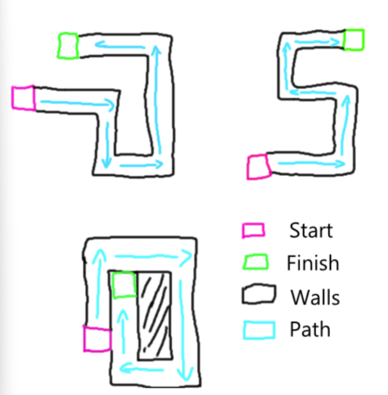
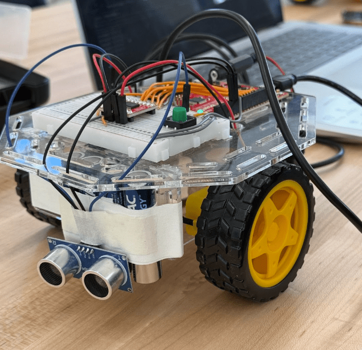

Autonomous Robot Project // December 6th 2024
Our project aimed to design, construct, and program a robot capable of navigating a series of challenges, including an autonomous traversal of a modular maze. The purpose of this project was to apply engineering principles to solve real-world robotics problems, focusing on teamwork, problem-solving, and iteration. Constraints included creating a robot and maze that met specific dimensions, functional requirements, and performance goals. The maze had to be modular, reconfigurable within two minutes, and measurable by sensors provided in the kit. This project highlights our design process, challenges encountered, and final achievements. The project consisted of four projects, going into more detail below.
Challenge 1 focused on designing and building a functional robot capable of basic movement and control. The objective was to establish a solid foundation for future challenges by ensuring the robot could move forward, and stop with precision. This required the integration of motors, wheels, and a chassis while programming basic motor functions.
Key milestones for Challenge 1 are listed below. Initial brainstorming involved early sketched for the design of the robot in order for it to stay balanced and still simple. We also created flowcharts prior to creating our first set up of code for movement logic. Next was the assembly, where we used components from the SparkFun kit. Motors were attached as well as our redboard and breadboard to ensure we can program the robot. We finally wired the robot and made sure each part was properly connected. Then came the programming where we used Arduino to code the robot. Functions included to move forward, turn left and right, and stop. For simplicity the code programmed so that each motor moved the exact same. This allowed for turning to be much smoother for later challenges in this Project

Robot after Challenge 1
What didn’t work for us after this challenge were the wheels slipping on smooth surfaces, causing the robot to turn sideways when moving forward. Additionally the robot had uneven weight distribution, causing it to move slower as it was dragging itself to the finish line. What worked was the motor speeds being the same, since coding the movement functions became a lot simpler and digestible. We decided to have our robot move ‘backwards’ so that the trunk of the chassis was actually the front half. This would let us configure a future sensor onto the robot with ease.
Above was our robot named ‘Model’ completing Challenge 1 flawlessly. The final robot design successfully achieved forward movement and stopping. This foundation work laid the grounds for the next challenge where the robot must navigate a known maze.
Challenge 2 focused on programming the robot to navigate a square path with consistent movement and precise right angle turns. The goal was to develop accurate movement patterns with timing and commands. This required more coding in Arduino for additionally functions of turning left and right.
Key milestones for Challenge 2 are listed below. This included figuring out how to get our robot to turn right and left with precision. An issue we encountered was that one of our motors was much stronger than the other and thus the robot turns were not synced at all. We had to play around with motor values and time delays so that each of the motors acted properly for right and left turns. Halfway during testing values we decided to try and level our robot so that it would stop dragging on the floor when moving. Maybe this would help the robot move straight more consistently, since from previous attempts, it veered often. So we taped used batteries to the front to have the center of mass be closer to the wheels. Although this added extra weight, the robot ended up moving straight much more consistently. Another issue we encountered was that now we had to run the robot on the floor. This may seem like a slight change but now the wheels had a shift in friction and movement was extremely shaky. If the speed of the robot was too high, the robot would start veering again. We ended up making the speed much slower and added some pauses so that the robot would not shift which ended up working. Finally we ended up putting tape on the bottom where a ping pong ball was attached so that it would not get stuck with any dust or other small particles during movement.

Robot after Challenge 2
Above is Model finishing Challenge 2, yet again flawlessly (but with very many failed attempts beforehand). What didn’t work was the consistency of turning and moving forward. The robot was struggling to move on the floor compared to the wood table. What worked is the turning which was adjusting by the motor speeds. We also figured out how to make sure the robot moved without veering, which was by adding stops to it. Although inconsistent, it would work enough of the time for us to be able to capture it on video. By the end of challenge, Model could navigate through the planned out path and was now ready for Challenge 3 where he now has to do it autonomously.
Challenge 3 focused on introducing sensors to the robot. This enables detection and we could now program it to avoid obstacles in the way. Model would now have to transition to fully run the maze himself, without our pre programmed turning inputs, and stop on his own as well. Below is a flowchart of how we programmed Model to detect the maze in Challenge 3, which remained the same for Challenge 4, with just a tweak in numbers.

What didn’t work was that the sensor didn’t really have a place to be. It was just taped on the batteries and often moved. We do not know if it had an effect on sensing ability but that looked to be the least of our worried. Since now our robot starting committing turns much more randomly. Whenever it turned, it would vary at least 3 seconds whether it would or not, and the strength of the turn. It would not go fully 90 degrees or too much, or even turn way off time. Our sensor would also not sense when the robot itself moved so it would not turn a majority of the time it came too close. The way we fixed a large amount of this was actually creating a much shorter loop where Model ran a short walk, sensed, and ran again until he came too close. This let our robot now above 90% of the time run straight with no issue. This is by far the biggest improvement we had. Much slower, but much more effective. Model now was also able to sense and committed turns on time. The only issue left is the intensity of the turn. At this moment we realized that even after many shifts in motor values and speeds, it would keep messing up. The real issue was batteries dying too quickly. Only during Challenge 4 we adopted a 6 pack for batteries due to a shortage. However by figuring out how well it turns and which values to use when the batteries were fresh allowed us to get near perfect runs for this challenge too. The end part of the maze where Model stops by himself worked well and did not need a shift. He would turn to check each side if something was there and if yes was for left and right, he would turn back and stop motors. Another adoption we took in was cleaner wiring. Model was truly looking like a model during the second half of this entire project.
The second half of Challenge 3 was preparing a maze that we would test other classmates robots for in Challenge 4. For the maze design we used SCAMPER evidence to brainstorm an idea that would fit the mold for a moderate difficulty maze. For substitution we though to use a type of foam instead of cardboard to improve durability. The carboard for Challenge 3 was almost always on the floor after failed attempts. This would stop that from happening. For combine we thought to include multiple turns so that the robot has to be consistent, and not just lucky to finish a round. For adapt we added a part in the center where we could save material by building just the connectors so the robot can travel around. Modify made us make sure the walls are tall enough for the robots. Not every sensor was at the same level and we wanted to make sure each robot was able to sense the obstacles in our maze. Put to another use was put into use from our extra pieces that we used for the barrier in the middle so that it would stay in place and not compress onto itself. We eliminated the need for extra material by including that void of space in the middle which still lets robots have a full maze to run. Our maze would be able to rearrange paths around the block which can make it be easier or harder, depending on how many turns we wanted to have. We drew out three designs for our maze. A KTDA table for each design and compared them all to see which of them would be a wiser choice for us to use in Challenge 4. Due to its high modularity, stability, and path clarity, maze 3 became our choice. It was well suited for reconfiguration and provided a clear layout to challenge fellow robots. Although it only had right turns, there were enough to force consistency. Additionally we ended the maze with a dead end. Th last challenge other robots had to face in our maze was stopping at the end instead of just crossing a finish line.


Robot after Challenge 3
Challenge 4 focuses on everything in Challenge 3 but now with 3 mazes that we would not know until the day of. We needed to make sure Model can run them all the same day for this challenge. This would include some optimization, and real time decision making to make sure we can adjust our speeds to battery health. We would not be able to constantly switch when the entire class is focusing on the same thing. The first steps include us actually building the maze for the class so we can all run our robots. When we were preparing to test the robot, we faced a few challenges. A challenge we faced was not being able to find any battery with sufficient power to move our robot consistently. Later, one of the teams from the previous class let us use their 6 battery pack to power our robot. After we changed to the 6 battery pack, we had to change the values in our code completely. Originally, our code had been overcompensating due to it being tuned for an underpowered robot. Now, with sufficient power, the robot was moving much faster and farther than we needed. Retuning the code took nearly half of the class period. However, we worked as efficiently as possible and were still able to have somewhat successful robot runs in the end. Even then we were running out of time and could not get Model to run each maze 100%, we ended up resorting to using some human intervention to make sure he still gets to the finish of the maze. The issues for us came from the way Model kept veering and it was frustrating when the rest of what we have already done has worked.
This final Challenge 4 showcased the entirety of our efforts with the robot semi-successfully navigating each modular maze. Some mazes were more difficult than others, and some were finished pretty quickly. This outcome reflects the team’s dedication to refining both the hardware and software through continuous feedback and experimentation. Additionally, the modular maze design provided a versatile platform for testing, aligning with the project’s constraints. Across four challenges, we built a robot capable of precise movements, real-time decision-making, and autonomous navigation in a modular maze. Each challenge presented unique problems, from programming accurate motor control to integrating sensors and adapting to unknowns. Through brainstorming, iterative design, and testing, we developed solutions that improved the robot’s functionality and performance. This project not only enhanced our engineering and programming skills but also taught us the value of teamwork, persistence, and adaptability. Moving forward, these experiences will serve as a foundation for tackling more advanced challenges in robotics and engineering design. At the end of the day, Model was able to perform on the catwalk.
The following are links to assignments throughout this entire project. Keep in mind not everything is covered in this portfolio section and the assignments are here for reference.
Project Overview